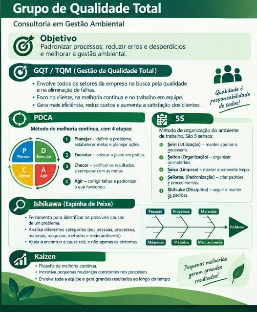
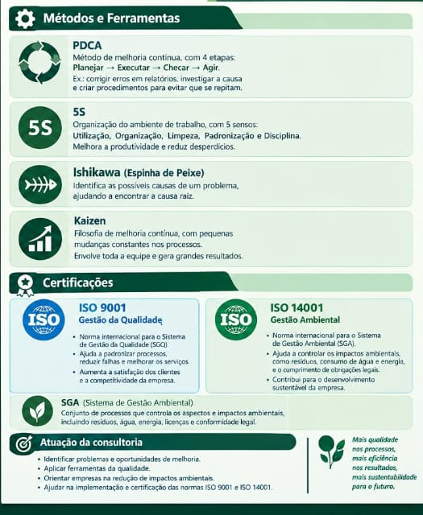

Qualidade é padronizar, melhorar e reduzir desperdícios.
Ferramentas e normas que padronizam processos, reduzem erros e desperdícios e melhoram a gestão ambiental da empresa.
Processos padronizados, melhoria contínua.
Objetivo: padronizar processos, reduzir erros e desperdícios e melhorar a gestão ambiental.
Qualidade é responsabilidade de todos!
Para isso combinamos métodos de melhoria contínua (PDCA, 5S, Ishikawa e Kaizen), a gestão da qualidade total e as normas ISO 9001 e ISO 14001, com o Sistema de Gestão Ambiental (SGA).
Planejar, Executar, Checar e Agir: o ciclo de melhoria contínua que sustenta toda a gestão da qualidade.
O que usamos na gestão da qualidade.
| Categoria / Ferramenta | Detalhes e descrição |
|---|---|
| GQT / TQM (Gestão da Qualidade Total) | Envolve todos os setores na busca por qualidade e eliminação de falhas; foco no cliente, melhoria contínua, trabalho em equipe, maior eficiência, redução de custos e aumento da satisfação dos clientes. |
| PDCA | Método de melhoria contínua dividido em 4 etapas: Planejar (definir problema e metas), Executar (colocar em prática), Checar (verificar resultados) e Agir (corrigir falhas e padronizar). |
| 5S | Método de organização do ambiente de trabalho composto por 5 sensos: Seiri (Utilização), Seiton (Organização), Seiso (Limpeza), Seiketsu (Padronização) e Shitsuke (Disciplina). |
| Ishikawa (Espinha de Peixe) | Ferramenta para identificar causas de problemas analisando categorias (pessoas, processos, materiais, máquinas, métodos e meio ambiente) para encontrar a causa raiz. |
| Kaizen | Filosofia de melhoria contínua que incentiva pequenas mudanças constantes nos processos, envolvendo toda a equipe para gerar grandes resultados. |
| ISO 9001 (Gestão da Qualidade) | Norma internacional que ajuda a padronizar processos, reduzir falhas, melhorar serviços, aumentar a satisfação dos clientes e a competitividade da empresa. |
| ISO 14001 (Gestão Ambiental) | Norma internacional do Sistema de Gestão Ambiental (SGA) que ajuda a controlar impactos ambientais (resíduos, água, energia) e cumprir obrigações legais, promovendo o desenvolvimento sustentável. |
| SGA (Sistema de Gestão Ambiental) | Conjunto de processos que controla aspectos e impactos ambientais, incluindo resíduos, água, energia, licenças e conformidade legal. |
Qualidade em duas páginas.
Os principais conceitos, métodos, ferramentas e certificações da gestão da qualidade.


Como a consultoria atua.
- Identificar problemas e oportunidades de melhoria
- Aplicar ferramentas da qualidade
- Orientar empresas na redução de impactos ambientais
- Ajudar na implementação e certificação das normas ISO 9001 e ISO 14001
Mais qualidade nos processos, mais eficiência nos resultados, mais sustentabilidade para o futuro.
Aprofunde cada frente.
Normas, gestão ambiental e ferramentas da qualidade em páginas dedicadas.
ISO 9001 e GQT / TQM
Gestão da qualidade: padronização de processos, foco no cliente e melhoria contínua.
Ver detalhesISO 14001 e SGA
Gestão ambiental: controle de impactos, resíduos, água, energia e conformidade legal.
Ver detalhesPDCA, 5S, Ishikawa e Kaizen
Ferramentas de melhoria contínua e de organização do ambiente de trabalho.
Ver detalhesQuer estruturar a gestão da qualidade?
Fale com nosso time e receba uma proposta de diagnóstico específica para o pilar de qualidade.